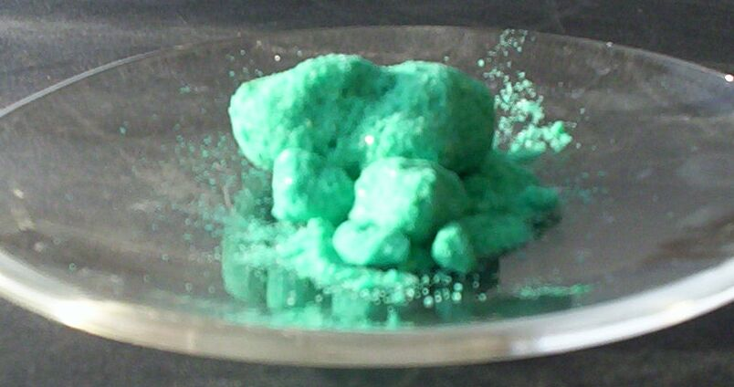

Sobre a obra
Sobre o filme e a escolha do grupo
No filme Operação Big Hero, a personagem Honey Lemon utiliza uma bolsa com reagentes químicos para criar compostos instantâneos. O Cloreto de Cobre foi escolhido por ser um sal que gera cores e reações marcantes, relacionando a ficção com a química real.
- Obra
- Operação Big Hero
- Autor(es)
- Don Hall e Chris Williams
- Ano
- 2014
- Substância
- Cloreto de Cobre (CuCl₂)
Identificação
Identificação da substância
- Nome
- Cloreto de Cobre(II)
- Fórmula química
- CuCl₂

Classificação
Classificação química
O Cloreto de Cobre(II) é classificado como um sal inorgânico, solúvel em água e formado pela ligação iônica entre o cátion cobre (Cu²⁺) e o ânion cloreto (Cl⁻).
Na obra
Onde aparece no filme
- Na cena de demonstração das esferas químicas no laboratório universitário.
- Nas sequências de combate onde reações químicas geram efeitos de fumaça e contenção.
Ciência
A ciência por trás da cena
Ao ser submetido à queima ou energia, o cobre emite luz de cor verde-azulada característica. As esferas no filme aplicam esse princípio para reações visuais rápidas.
Mundo real
No mundo real
Como é obtida
Obtido através da reação entre cobre metálico e cloro a altas temperaturas, ou pela ação do ácido clorídrico sobre compostos de cobre.
Usos industriais e cotidianos
Utilizado como catalisador em reações químicas, na fabricação de pirotecnia (fogos de cor verde) e no tratamento de superfícies metálicas.
Riscos à saúde e ao ambiente
É tóxico se ingerido e causa irritações na pele e olhos. Apresenta toxicidade para a vida aquática.
Prova online
Teste seus conhecimentos
Carregando quiz…
Referências
Fontes utilizadas
- ATKINS, Peter. Princípios de Química. 5. ed. Porto Alegre: Bookman, 2012.
- Operação Big Hero. Direção: Don Hall, Chris Williams. Walt Disney Studios, 2014.